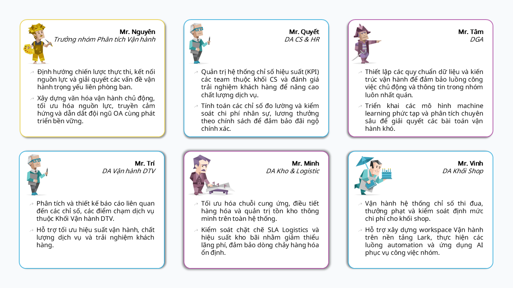

TẦM NHÌN & SỨ MỆNH
Nhóm Phân Tích Vận Hành (OA)
Tầm Nhìn
Trở thành "Hệ điều hành" hỗ trợ dẫn dắt mọi quyết định vận hành thông qua dữ liệu.
Sứ Mệnh
Kiến tạo đội ngũ phân tích tự chủ dựa trên quy trình vận hành tiêu chuẩn (SOP), làm chủ công nghệ và tư duy quản trị để cung cấp giải pháp thực thi đột phá.
Năng Lực Tự Chủ
Xây dựng đội ngũ chuyên viên làm việc độc lập. Giảm phụ thuộc vào quản lý trực tiếp nhờ hệ thống quy trình bài bản và chuẩn mực.
Làm Chủ Bộ Gen (DNA)
Kết hợp nhuần nhuyễn giữa sức mạnh công nghệ (Tools/Data) và bản lĩnh tư duy quản trị (Business Mindset).
Giá Trị Thực Chất
Chuyển đổi từ vai trò "người mô tả" (Reporting) sang "người giải quyết vấn đề" (Problem Solver).
Chuyển Dịch Phân Bổ Thời Gian
Cốt lõi của việc chuyển đổi thành "Hệ điều hành" là việc cắt giảm các tác vụ thủ công, lặp lại. Mục tiêu chiến lược là chuyển đổi 75% thời gian thao tác thủ công sang thời gian phân tích chuyên sâu và đưa ra hành động thực tiễn.
- ✔ Loại bỏ báo cáo, thao tác thủ công qua hệ thống tự động.
- ✔ Cảnh báo thông minh thay cho việc tìm kiếm lỗi chủ động.
- ✔ Tập trung nguồn lực vào việc đưa ra Actionable Analysis.
Biểu đồ so sánh cấu trúc phân bổ thời gian trước và
sau khi tối ưu
Lộ trình kiến tạo Mô hình 3 lớp
Mục tiêu giải quyết vấn đề bằng mô hình công nghệ tinh gọn. Xây dựng hạ tầng kỹ thuật 3 lớp, từ việc tạo ra nền tảng số liệu duy nhất (dbt), điều phối luồng xử lý (Airflow), đến tự động hóa hành động (n8n).
Health-check OA
Xây dựng một "báo cáo kiểm định" nội bộ để đảm bảo mọi sản phẩm dữ liệu ra đời đều đạt chuẩn và đội ngũ nhân sự không ngừng cải tiến, phát triển. Nội dung tập trung vào 3 khía cạnh:
Chất lượng (Quality Check)
Loại bỏ hoàn toàn sai số liệu do lỗi kỹ thuật và đảm bảo tính vẹn toàn dữ liệu. Nâng cao chất lượng trải nghiệm người dùng qua giao diện, tốc độ.
Hiệu suất (Performance Tracking)
Giám sát tiến độ hoàn thành qua hệ thống tập trung. Đo lường tốc độ xử lý và tỷ lệ chuyển đổi yêu cầu từ các phòng ban.
Năng lực (Skill Mapping & Upgrade)
Xây dựng Ma trận kỹ năng (SQL, Python, Business Sense) và sử dụng các "Case study" thực tế để đào tạo chéo giúp đội ngũ giảm phụ thuộc vào cá nhân và tăng tính kế thừa.

Giá trị mang lại: sự tín nhiệm, tin tưởng vào độ chính xác của báo cáo. Tối ưu, nắm rõ hiệu suất làm việc của từng chuyên viên DA.
Health-check OP
Trở thành "Bảng điều khiển" cho COO và là "kết quả chuẩn đoán" cho phòng Tối ưu Vận hành để đánh giá được sức khỏe hệ thống.
Mô hình "The Power Duo"
Bác sĩ chẩn đoán
Tìm ra các điểm nghẽn (bottlenecks) và quy trình gây lãng phí dựa trên dữ liệu. Phân tích các biến động đưa ra cảnh báo.
Kỹ sư thực thi
Tìm hiểu vận hành thực tế, đề xuất cải tiến quy trình, quy định và triển khai hệ thống dựa trên dữ liệu chuẩn đoán.
Operational Excellence
Báo cáo tổng hợp giúp đánh giá toàn diện sức khỏe hệ thống.
Hiệu quả thực thi
Đo lường tỷ lệ đạt target các chỉ số vận hành, kinh doanh tại hệ thống cửa hàng.
Dự báo & Đề xuất
Chỉ rõ nguyên nhân và đưa ra dự báo hoặc giải pháp cụ thể thay vì chỉ mô tả số liệu.
Cảnh báo tức thì
Gửi cảnh báo ngay khi các chỉ số sức khỏe rơi vào vùng nguy hiểm qua hệ thống tự động hóa.
Chiến Lược Thực Hiện
Để hiện thực hóa Tầm nhìn và Sứ mệnh, nhóm tập trung vào 3 mũi nhọn được thiết kế theo một chuỗi giá trị liên kết chặt chẽ.
Chuẩn Hóa
Standardization
Data Modeling: Xây dựng cấu trúc dữ liệu thống nhất và chuẩn mực cho toàn hệ thống vận hành.
MỤC TIÊU:
Đảm bảo "Single Version of Truth" trong mọi báo cáo.
Tối Ưu
Optimization
Tự động hóa: Cắt giảm triệt để các tác vụ thủ công, lặp lại gây lãng phí nguồn lực và tài nguyên.
MỤC TIÊU:
Chuyển đổi 75% thời gian thao tác thủ công thành thời gian phân tích và hành động.
Thực Thi
Execution
Giải pháp hóa: Mọi kết quả đầu ra của nhóm phải là giải pháp vận hành cụ thể.
MỤC TIÊU:
Không dừng lại ở mức mô tả dữ liệu. Mỗi con số đưa ra phải đi kèm phương án tối ưu.
Hồ Sơ Năng Lực Đội Ngũ OA
Sự chuyển dịch từ "Vận hành hỗ trợ" sang "Phân tích tự chủ" đòi hỏi một bước nhảy vọt về năng lực. Biểu đồ đánh giá sự mở rộng toàn diện của đội ngũ trên 5 chiều kích cốt lõi.
Giảm phụ thuộc quản lý
Thông qua việc nắm vững SOP và dữ liệu, mỗi chuyên viên trở thành một Decision Maker độc lập cho phạm vi phụ trách.
Tư duy hệ thống dẫn dắt
Không chỉ cung cấp số liệu, đội ngũ kiến tạo ra các mô hình dự báo và định hướng chiến lược hành động trực tiếp cho khối vận hành.
Mảnh ghép Chuyên môn và Trách nhiệm
Phân vai chuyên biệt, nhất quán vận hành

Danh mục Nhiệm vụ
Hỗ trợ Đa điểm – Quản trị Đa chiều – Phát triển Đa năng
Thực hiện yêu cầu hỗ trợ phòng ban (Approvals)
Service Excellence
Workspaces Power BI
- ✔Tạo mới báo cáo theo yêu cầu
- ✔Điều chỉnh báo cáo đáp ứng nhu cầu theo dõi theo tình hình vận hành tại thời điểm/giai đoạn
- ✔Quản trị phân quyền xem và xuất dữ liệu cho toàn khối Vận hành
Hỗ trợ Dữ liệu
- ✔Cung cấp dữ liệu chính xác
- ✔Phân tích chuyên sâu hỗ trợ ra quyết định
Quản trị định kỳ
Operations Compliance
Duy trì Hạ tầng & Nghiệp vụ
- ✔Reset tài khoản PBI free
- ✔Tổng hợp kết quả thưởng/phạt khối shop
Điều phối Mục tiêu
- ✔Phân chia các loại Target khối vận hành
- ✔Lưu trữ kết quả dánh giá tháng
Tối ưu nguồn lực & Nâng tầm (Nội bộ nhóm)
Development & Tech
Kiểm soát Chất lượng
- ✔Health-check kết quả công việc & năng lực nhân sự
- ✔Duy trì & Tối ưu các đầu mục báo cáo
Nâng cấp Khả năng
- ✔Phát triển và ứng dụng công nghệ: AI & Automation vào quy trình
- ✔Tìm hiểu các bài toàn vận hành, cảnh báo rủi ro & đề xuất cải tiến
Quy định đánh giá KPI
1. Mục tiêu chiến lược
Kịp thời & Chính xác
Đảm bảo tính kịp thời và chính xác của dữ liệu phục vụ vận hành.
Business Partner
Nâng cao vai trò đồng hành của OA đối với từng phòng ban phụ trách.
Chủ động & Tối ưu
Khuyến khích sự chủ động và tối ưu hóa quy trình báo cáo.
2. Phân loại & Trọng số
| Nhóm công việc | Trọng số | Định nghĩa |
|---|---|---|
| Công việc Chính | 70% | Tạo mới và điều chỉnh báo cáo theo yêu cầu. (Lark Approvals) |
| Công việc Hỗ trợ | 20% | Xuất dữ liệu, hỗ trợ phân tích dữ liệu, cấp quyền báo cáo. (Lark Approvals) Giải đáp thắc mắc về số liệu cho phòng ban, bảo trì báo cáo cũ. |
| Feedback | 10% | Điểm hài lòng từ cấp quản lý của phòng ban yêu cầu về thái độ và tư duy giải quyết vấn đề. |
3. Tiêu chí đánh giá chi tiết
3.1. Điểm Tiến độ (ST)
Áp dụng cho cả Công việc Chính và Hỗ trợ
| Thời gian hoàn thành | Điểm tiến độ | Ghi chú |
|---|---|---|
| Trước hạn > 1 ngày | +1.1 | Khuyến khích cho các task có sự đầu tư sớm. |
| Đúng hạn (Deadline) | 1.0 | Hoàn thành đầy đủ yêu cầu. |
| Trễ hạn <= 3 ngày | 0.5 | Có thông báo lý do trước deadline 24h. |
| Trễ hạn > 3 ngày | 0 | Gây ảnh hưởng trực tiếp đến vận hành. |
3.2. Điểm Chất lượng (SQ)
Điểm chất lượng sẽ được cộng/trừ trực tiếp vào task Công việc chính.
Điểm Cộng (+0.1)
Có đề xuất thêm các chỉ số (Insight) giá trị cho phòng ban mà trong yêu cầu ban đầu không có; Tối ưu hóa giúp báo cáo load nhanh hơn >30%.
Điểm Trừ (-0.1)
Báo cáo có sai sót về logic dữ liệu sau khi đã bàn giao; Format trình bày không đúng chuẩn brand guide của hệ thống.
4. Công thức tính KPI
KPI = (Avg(SCore) × 0.7) + (Avg(SSupport) × 0.2) + (Avg(SFeedback) × 0.1)
* SCore = ST + SQ (Điểm tiến độ + Điểm chất lượng của task chính).
SCore = Điểm tiến độ của task hỗ trợ.
Feedback: 0-1
5. Quy trình vận hành Task
Bước 1: Ghi nhận Task
Sử dụng Lark Approvals/Base để lưu vết yêu cầu hỗ trợ từ các phòng ban.
Bước 2: Duyệt Deadline
Chuyên viên OA tự thương lượng deadline với phòng ban dựa trên độ ưu tiên (Priority).
Trường hợp quá tải (Overload), nhân sự phải báo cáo Lead OA trong vòng 4h kể từ khi nhận task để điều chỉnh deadline hoặc điều phối nguồn lực.
Bước 3: Phê duyệt
Kết quả task chỉ được tính là hoàn thành khi có xác nhận "Đạt" từ Lead ODA (về mặt kỹ thuật) và Feedback từ User (về mặt sử dụng).
6. Điểm Thưởng & Phạt
Thưởng Nóng
Cộng 0.2 - 0.5 vào tổng KPI
Xử lý sự cố dữ liệu khẩn cấp trong các đợt Campaign lớn (NPI, BF, Tết...) giúp hệ thống vận hành thông suốt.
Phạt Nặng
Trừ 0.5 - 1.0 vào tổng KPI
Rò rỉ dữ liệu nhạy cảm; Tự ý thay đổi logic báo cáo không qua Lead.
7. Hệ thống công cụ (Ecosystem)
Git
Quản lý và lưu trữ version source code cho toàn bộ các báo cáo PBI, đảm bảo tính kế thừa và kiểm soát thay đổi.
Lark Wiki
Thư viện tài liệu báo cáo, framework, quy trình và quy định nội bộ nhóm OA.
dbt
Thực hiện Data Modeling, xây dựng cấu trúc dữ liệu chuẩn hóa phân tích.
Lark Approvals
Nơi tiếp nhận yêu cầu hỗ trợ tập trung từ các phòng ban gửi về nhóm, đảm bảo mọi Task đều được phê duyệt minh bạch.
Lark Base
Quản lý ticket, theo dõi tiến độ và là nguồn dữ liệu tính KPI hàng tháng.
DATA DRIVEN 🔹 DECISION LED 🔹 ACTION ORIENTED
KHỐI VẬN HÀNH | CELLPHONES